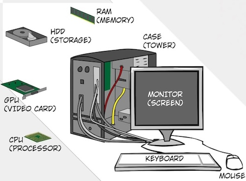

What this tutorial covers

Every Computer, no matter where it is, is built from many similar working parts that work together. This guide takesthe cover off the device and talks and walks you through parts one by one, in simple language for anyone to understand.
The guide starts with the processor and memory, the two parts that decide how quickly a machine can think. Then you will take a look at storage system and the difference an SSD makes, then at the input and output devices that connect you to the machine. The last lesson puts everything you have together and how to read a specification sheet.
It is written for students, first time buyers of hardware and anyone.
About the team
PC Parts Guide was built by four students in ISTE 140 at RIT Dubai. Each member wrote one lesson. Read more on the about page.